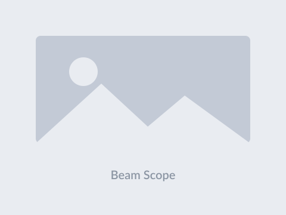

I am a PhD student in Biomedical Engineering @ Duke University
(expected 2027), advised by Prof. Pengfei Song, working on ultrasound imaging systems and
medical device R&D. My current focus is FASTER-AIR, a portable clip-on device that turns
a conventional 1-D linear-array probe into a high-resolution 3-D imaging system.
I hold an M.S. in Biomedical Engineering from USC and
previously did PhD studies in Bioengineering at
UIUC. At USC’s Ultrasound Transducer
Resource Center I worked with Prof. Qifa Zhou on transducer design and fabrication and on an
ultrasound tweezer platform for cell manipulation.
My work spans the full device pipeline: concept development, wave propagation simulation,
transducer design and fabrication, prototyping, system integration, image reconstruction, and
benchtop verification and validation.
Up till now my focus has been on focused & therapeutic ultrasound, 3-D imaging and Doppler,
ULM, and deep learning–based computational imaging, with experience in k-Wave, Field II,
Verasonics, hydrophone metrology, MEMS, and embedded control. Feel free to reach out if any of
the above interests you.
A clip-on 3-D system built on a MEMS tilting acoustic reflector. My air-backed
convex–concave design improved elevational resolution from 2.98 to 1.39 mm and CNR
from 1.57 to 2.24; volumetric flow via power-weighted SIVV matched reference rates from
60–420 mL/min.
D. Yan*, M. R. Lowerison, D. P. Bradway, M. Yi, S. Abbasikamazani,
J. Zou, and P. Song, “Air-backing acoustic reflectors for enhanced FASTER 3-D
ultrasound imaging,” submitted to IEEE TUFFC, 2026.
Beam Scope: Portable Calibration Accessory

Replaces a two-scanner, two-transducer water-tank calibration with a single-system workflow
completed in minutes, alongside Arduino-based control for reflector actuation, imaging-plane
positioning, and acquisition synchronization.
Focused Ultrasound with Concurrent Imaging
A stainless-steel convex–concave clip-on beam-path remodulator for H-102 transducers,
with a central aperture for imaging arrays that enables image guidance during
neuromodulation. Includes fUS in mice mapping stimulus-evoked cerebral hemodynamics.
Transcranial Ultrasound Localization Microscopy
Deep learning phase-aberration correction using experimentally acquired skull-aberrated and
reference PSF banks to cut training-to-in-vivo domain shift — up to 10.96% better in vivo
resolution through intact mouse skulls.
M. Yi, Z. Huang, Y. Wang, B.-Z. Lin, D. Yan, Y. Shin, M. Lowerison,
and P. Song, “Addressing domain shift in deep learning-based phase aberration
correction for transcranial ULM,” submitted to
IEEE Transactions on Medical Imaging, 2026.
Talks
IEEE International Ultrasonics Symposium (IUS 2026), Raleigh, NC
— selected oral, “Air-Backed Curved Acoustic Reflectors for Elevational Beam
Refocusing in FASTER 3-D Ultrasound Imaging.” Oct 2026.
International Symposium on Ultrasonic Imaging and Tissue
Characterization, Silver Spring, MD — oral, on FASTER-AIR’s reflector
architecture, calibration workflow, and volumetric flow validation. Apr 2026.
AIUM Annual Convention, Orlando, FL — poster, clip-on 3-D
ultrasound and volumetric flow on a GE LOGIQ E10 with a clinical L2-9D probe. 2025.
Detailed Pub List
D. Yan*, M. R. Lowerison, D. P. Bradway, M. Yi, S. Abbasikamazani,
J. Zou, and P. Song, “Air-backing acoustic reflectors for enhanced FASTER 3-D ultrasound
imaging,” submitted to IEEE Transactions on Ultrasonics,
Ferroelectrics, and Frequency Control, 2026.
M. Yi, Z. Huang, Y. Wang, B.-Z. Lin, D. Yan, Y. Shin, M. Lowerison,
and P. Song, “Addressing domain shift in deep learning-based phase aberration correction
for transcranial ultrasound localization microscopy,” submitted to
IEEE Transactions on Medical Imaging, 2026.
M. R. Lowerison et al., including D. Yan, “Comparison of
high-frequency ultrasound transducers for microvascular localization microscopy in the mouse
brain,” Imaging Neuroscience, vol. 3, 2025.
M. R. Lowerison et al., including D. Yan, “Capillary-scale
microvessel imaging with high-frequency ultrasound localization microscopy in mouse
brain,” bioRxiv, 2024.
Z. Dong et al., including D. Yan, “Real-time 3-D ultrasound
imaging with a clip-on device attached to common 1-D array transducers,”
J. Acoust. Soc. Am., vol. 155, p. A102, 2024.
Y. Zeng et al., including D. Yan, “Manipulation and mechanical
deformation of leukemia cells by high-frequency ultrasound single beam,”
IEEE TUFFC, vol. 69, no. 6, pp. 1889–1897, 2022.